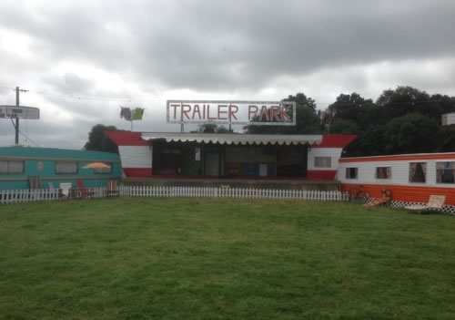
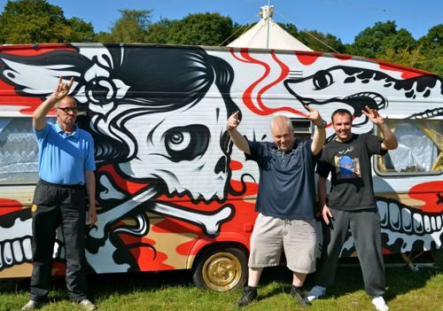

The Mindfield spoken word arena returns once again with a stimulating spark-filled programme designed to entertain, inform and inflame. Set among the ancient trees on the lawns of Stradbally Hall you'll find an oasis of literary readings, political debate, performance poetry, science experiments, inspiring talks, news quizzes, public conversations and much more. Together with the feast for the senses that is the Theatre of Food, the MindField Arena invites us to fill our brains with new thoughts, ideas and experiences that we hope will engage and help inspire us to all be change makers.
The Enclave, Richard Mosse's powerful video installation of life and conflict in the Congo, and which was Ireland's entry in the 2013 Venice Biennale, has inspired the the theme of this year's programme - "Africa - A Rising Continent" - with artists, academics, poets, writers and preachers all reflecting on the past, present and future of Africa and her people.
The life of the mind is under the microscope once again in the Comedy & Spoken Word corner of the festival. The Comedy Tent has always been a major attraction with a steady stream of Picnikers popping in for some comic relief courtesy of the very funniest in Irish and International comedians. It wouldn't be Electric Picnic without the peals of laughter across the lawns of Stradbally.
Body & Soul is an Irish creative collective, with a heart-shaped mind and a cutting-edge soul.
Sustainability conscious, without being too-in-your-face, Body&Soul brings together a collaboration of artists, musicians, poets and performers in a sparkly, chilled-out, enchanted environment - an eclectic mix of electronic & visual arts, featuring home grown talent, emerging artists and a selection of international guests.
Body&Soul also put together small, bespoke events through our trademark atmospheric engineering - among which, includes our very own intimate festival in June. Visit us on www.bodyandsoul.ie
BODY&SOUL at Electric Picnic
Body&Soul returns to Electric Picnic, radiating its explosive magic from within the confines of its netherworld-like haven: always offering festival goers something they won't have seen before.
EXPLORE
A warren of pathways leading to quirky little sitting rooms, bubbling hot tubs, colourful cafes and music-filled tipis - stumble upon acoustic sessions, yoga and massage, theatrical performances or a colourful pocket of peace...
BEHOLD
The Body&Soul Stage, nestled within a natural ampitheatre and built from fallen Stradbally trees, and The EarthShip stage constructed from found and recycled materials: previous headline artists to perform here include Martina Topley Bird, Ghost Poet, Black Devil Disco Club, Austra, Caribou, Katie Kim, Tuung, Laura Marling, The Orb, Omar Souleyman and John Cooper Clarke. Stay tuned in- Our line up will be announced mid July.
ESCAPE
To the Zen Gardens, among 60 hand-picked therapists, venture in to the beautifully constructed Peach Pagoda, step in to creative workshops, shamanic journeys and pretty corners where you can sit back, relax and watch the surrounding electric energy, as it passes you by.
MARVEL
At the art pieces dotted across the expanse of the Body&Soul world - a world of imagination presented by a collaborative of artists from all over the country and overseas - sculptors, painters, carpenters, weavers, welders, dancers and ringmasters - all dreaming under the Body&Soul umbrella to bring you a little piece of their own magic.
PARTICIPATE
Calling all Artists, Visionaries, Volunteers, Story-tellers, Spoon-Benders, Trumpet-Players, Shakers, Bakers or Candlestick-Makers...We want to hear about what you have up your sleeve.
Whether it's a bunch of flowers, a purple rabbit, a floating folly or a space ship - if it will make our festival somewhere you want to be - Write it down! Send it on! We're all Ears.
Body & Soul. One Hundred Quirky Nooks and Crannies.
Soul Kids is a magical place where wonderful things happen to exist.
Soul Kids is a celebration of nature, creativity an all things magical. A playground for the imagination grown by the Body&Soul team over the last ten years. It is a space dedicated solely to children and their families.
Applications for Body&Soul are now open here
Earlier this year Trailer Park opened its doors a couple of inches to see if there was anyone out there who wanted to get involved, to bring their own caravan or mobile home dream to life, and host it at the Electric Picnic. One hundred and twenty lunatics responded, and now we don't know what to do.
So whoever is responsible for the see-saw with a caravan on each end, or the dumper-truck monster, or the re-birthing betty 'vagina' caravan, or the Flintstone cave, or the upside-down Caravanaoke, or the fifties rockabilly club in a milk float, or the giant victorian diving bell, or the Ganesh Elephant van, thanks a fecking lot: we'll get back to you.
After two years of Trailer Park paying modest homage to the humble caravan, the glittering airstream, the vaudeville circus van, the game is up. It has now become the Montparnasse of the Picnic, a home for people with a constant stream of impractical but passionate ideas about how the world could be. This vintage vacation park has hit the absinthe, and the result makes no sense but its fabulous.
At its centre, a stunning theatrical enclosure made of joined-up, stacked campers, vintage caravans, mobile homes, vintage and retro trailers, the whole area will now be significantly expanded to create an eccentric community of performers, stylers, feeders and imbibers, miniature restaurants, wacky clinics and oddball theatres.
The CARAVAN STAGE hosts bands in the living room, bedroom, kitchen and lavatory of a mobile home - a vaudevillian carnival cabaret which brings together exotic hula dancers, contortionist , burlesquettes, acrobat clownsters, and a cluster of three-legged dogs. THE TRAILER PARK TEA GIRLS will fill you in on the gossip while you have a cuppa; THE FOOT HOSPITAL is where folks sink into a deckchair with the newspapers, while plunging their tired feet into a hot seaweed bath; DUBLIN VINTAGE FACTORY will provide trailer park makeovers (guys: clip in mullets; trucker hats; handle-bar moustaches; girls: false lashes; quiffs; gum and beauty spots) and then wheel out rails of 50s, 60s, 70s, and 80s vintage clothing to sift through... and find the new you. UNCLE EARLS PHOTO SHACK will be on standby to make sure you never forget it. THE MOVEMBER CLINIC will offer gents (hell, ladies too) facial hair suggestions and furnish them with hairy lip-limpets to wear for the day.JIMMY LEE'S JUKE JOINT will serve up authentic gumbo while someone miakes light work of a washboard.
Complete with picket fencing, trellis-work, flamingos, gaudy colours, retro sun-loungers, roaring braziers, frilly curtains, our bar-staff dressed in fluffy negligees with curlers will serve beers to anyone in a grubby white vest and a comb, and pina-coladas to anyone with orange cleavage and tattoos. Lamb barbeques will glow beneath palm trees, and the deck chairs will be out.
TRAILER PARK: there's no moving us on.
The Captain of the Salty Dog trousers the change from the tip bowl at the local greasy spoon, shuffles back to the forest at Stradbally, pokes the creaking timbers of shipwreck that has consistently lowered the tone at Electric Picnic, and considers his work done for another year.
This 40-tonne French trawler, washed up in the forest at Stradbally, offers her deck as a stage for raspy minstrels hoodwinked into performing, and her sails as shelter for deluded revellers who spend all three days trying to get to the main arena. The ship's wheel will be salvaged once again from the pawn shop, the masts and sheets hoisted into the sky, and a rabble of layabouts press-ganged into service.
Bands will be selected strictly according to our guidelines of (a) including a mandolin and (b) bribery. A willing ear for any such participants can be found at saltydogsaloon@gmail.com.
The line-up will be announced in July and in the meantime rest assured we are searching high and low for the best there is. In the Bahamas.
The Salty Dog promises this year to be by far the best year ever. Come to the mothership, sons and daughters, and be in the company of the lost.
Trenchtown, the Jamaican gem of Stradbally forest, in 2013 they unlesahed a 'One Love'policy amongst Trenchtowners, and as always an eclectic, action packed weekend that promises to be bigger and more Caribbean than ever before.
'One Love' was the theme running throughout the grounds of Trenchtown last year and represented the strong links between our 2 islands - Jamaica and Ireland, which have long been associated through our similarities and to this day bridges the gap of six thousand miles between us.
Based in The Jamaican Village, Trenchtown is a favourite among revellers in the woods, offering the finest in home-grown and international Reggae, Dub, Ska & Dancehall artists. Each year the stage is set on 'Fy-ah' by the hottest acts on the scene and this year is set to be no exception. With new space, a new stage and some new acts all you have to do is feel de beat and follow ya' feet!
Something for the night owls...
Trenchtown has grown and expanded its well-known area Inna da Woods to include the new Jungle Stage last year. Revelation Sound System will be in residence for the weekend withPressure Drop Sound System and many more artists set to bring the newly added space to life.
Check back to see what Trenchtown has in store for 2014...